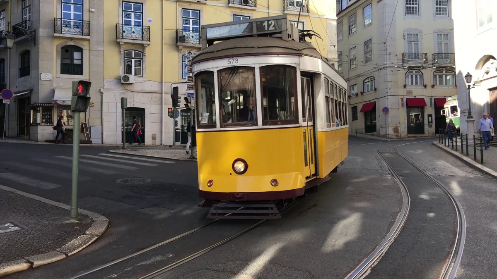

Início › Destinos › Lisboa › Lisboa Card
Lisboa Card: preço, o que inclui e quando compensa
Quanto custa, onde dá entrada livre e onde só dá desconto, ponto por ponto, e a conta de três dias-tipo com os preços que o guia apurou. Os lugares que quase todo brasileiro quer ver não são grátis com ele.
Apurado por Allan Vitor · @viagemnalupabr (abre em outra aba)

Storyblocks · licença royalty-free · SBI-351476296
Nos três, o Lisboa Card dá só desconto. Quem monta o roteiro em volta deles paga a entrada quase inteira e ainda paga o cartão. Ele compensa em Belém e no transporte, não em Sintra.
Entrada livre, desconto ou nada
| Ponto | Sem o cartão | Com o Lisboa Card |
|---|---|---|
| Mosteiro dos Jerónimos | € 18 | Entrada livre |
| Torre de Belém | € 15 | Entrada livre |
| Padrão dos Descobrimentos | € 10 | Entrada livre |
| Castelo de São Jorge | € 17 | Entrada livre: menos para quem tem de 13 a 15 anos, que paga € 8,50 |
| Praça do Comércio e o Arco da Rua Augusta | Grátis | Entrada livre: a subida ao Arco da Rua Augusta; a praça é grátis para todos |
| Elétrico 28 | € 1,72 | Viagem incluída: como todo o transporte da Carris e do metrô |
| Museu Nacional dos Coches | € 15 | Não confirmado: o museu não aparece na lista do cartão que a apuração conseguiu ler |
| Museu Calouste Gulbenkian | € 16 | Só desconto: 20% de desconto |
| Quinta da Regaleira | € 20 | Só desconto: 20% de desconto |
| Oceanário de Lisboa | € 25 a € 29 | Só desconto: o desconto divulgado é de 15%, mas não está em fonte oficial |
| Palácio Nacional da Pena | € 20 | Só desconto: 10% para adulto, e as fontes divergem |
| Castelo dos Mouros | € 12 | Não consta: a ficha não registra desconto nem entrada com o cartão |
Cada linha sai da ficha do ponto no guia, com a fonte e a data. Miradouros de Alfama, Time Out Market e Cabo da Roca e Cascais não cobram entrada: o cartão não muda nada neles.
Três dias, com e sem o cartão
Adulto, cartão de 24 horas, só os ingressos com preço único e o transporte do dia. Na Pena e na Regaleira, o desconto que a ficha registra.
- Um dia em Belém (Mosteiro dos Jerónimos, Torre de Belém e Padrão dos Descobrimentos). Sem o cartão: € 50,25, com o passe de 24h da Carris e do metrô. Com o cartão de 24h: € 31. O cartão compensa: sobram € 19,25.
- Um dia no centro (Castelo de São Jorge). Sem o cartão: € 24,25, com o passe de 24h da Carris e do metrô. Com o cartão de 24h: € 31. O cartão não compensa: perde € 6,75.
- Um dia em Sintra (Palácio Nacional da Pena, Quinta da Regaleira e Castelo dos Mouros). Sem o cartão: € 63,40, com o passe de 24h com o comboio para Sintra. Com o cartão de 24h: € 77. O cartão não compensa: perde € 13,60.
O autocarro 434, da estação de Sintra até a Pena, fica fora das duas contas: a ficha não diz se o cartão o cobre. O Museu dos Coches também fica fora, porque não está confirmado no cartão.
O que o guia já dizia
Preços em vigor de abril de 2026 a março de 2027: 24h € 31, 48h € 51, 72h € 62 para adulto; € 21, € 28 e € 35 para criança de 4 a 15 anos. Inclui transporte público ilimitado — metro, Carris, elétricos, e os comboios urbanos para Sintra e Cascais.
A conta, com os preços que apuramos: o passe de transporte de 24h com comboio custa € 11,40 sozinho. Some uma entrada nos Jerónimos, a € 18, e já dá € 29,40 — falta € 1,60 para compensar. Some duas entradas grandes, Jerónimos e Torre, e dá € 44,40 contra os € 31 do cartão: folga de € 13,40. Ou seja, o de 24h compensa a partir de duas entradas no dia; o de 48h, a partir de duas entradas grandes no total; o de 72h, com apenas duas. Quanto mais dias, mais fácil compensar, porque o transporte incluído vira a parte pesada do valor.
Onde o cartão dá entrada livre: Jerónimos, Torre de Belém, Castelo de São Jorge, Padrão dos Descobrimentos e o Arco da Rua Augusta. No Museu dos Coches, não confirmado: ele não aparece na lista do cartão que a apuração conseguiu ler, e a ficha do museu não conta com ele. Onde dá só desconto: Gulbenkian 20%, Regaleira 20%, Oceanário 15% e Palácio da Pena 10%. Repare que os três lugares que quase todo brasileiro quer ver — Oceanário, Pena e Regaleira — não são grátis com o cartão.
E há uma armadilha no cartão infantil: crianças até 12 anos já entram de graça em Jerónimos, Torre, Castelo e Padrão. O cartão de criança, a € 21, compra basicamente transporte. Só passa a fazer sentido dos 13 aos 15 anos, quando o menor já paga meia nos monumentos nacionais.
O que se compra online é um voucher, trocado presencialmente por cartão físico. A ativação é manual e o relógio começa a correr quando você escreve a data e valida num transporte — não quando retira.
O que mais se pergunta sobre o Lisboa Card
Quanto custa o Lisboa Card?
€ 31 o de 24 horas, € 51 o de 48 e € 62 o de 72, para adulto; € 21, € 28 e € 35 para criança de 4 a 15 anos. Preços em vigor de abril de 2026 a março de 2027.
O Lisboa Card vale a pena?
Depende do dia. Num dia em Belém, com Jerónimos, Torre de Belém e Padrão, sobram € 19,25. Num dia em Sintra não compensa: Pena e Regaleira só dão desconto, e o cartão perde € 13,60. A conta completa está nesta página.
O Lisboa Card inclui o Oceanário e o Palácio da Pena?
Não dá entrada livre em nenhum dos dois: só desconto. O do Oceanário é divulgado como 15%, sem fonte oficial; o da Pena, como 10% para adulto, com fontes divergentes. A Regaleira também é só desconto, de 20%.
O Lisboa Card inclui transporte?
Inclui o transporte público de Lisboa — metrô, Carris e os elétricos, como o 28 — e os comboios urbanos para Sintra e Cascais.
Criança precisa de Lisboa Card?
Até 12 anos, quase nunca: a criança já entra de graça em Jerónimos, Torre de Belém, Castelo e Padrão, e o cartão infantil acaba pagando só o transporte. Passa a fazer sentido dos 13 aos 15 anos.
As outras páginas de Lisboa
Hospedagem
O cartão se compra online, como voucher trocado por cartão físico. A hospedagem e a passagem não entram nos preços desta página; a ficha de custos traz as duas, com a data da apuração.
Este link dá comissão ao site. Você paga o mesmo preço que pagaria indo direto, e a comissão não altera nenhum número do site. Como isso funciona.